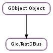

| static | new(flags) |
| static | unset() |
| add_service_dir(path) | |
| down() | |
| get_bus_address() | |
| get_flags() | |
| stop() | |
| up() |
| Name | Type | Flags | Description |
|---|---|---|---|
| flags | Gio.TestDBusFlags | r/w/c | Flags specifying the behaviour of the dbus session |
None
Bases: GObject.Object
A helper class for testing code which uses D-Bus without touching the user’s session bus.
Creating unit tests using Gio.TestDBus
Testing of D-Bus services can be tricky because normally we only ever run D-Bus services over an existing instance of the D-Bus daemon thus we usually don’t activate D-Bus services that are not yet installed into the target system. The Gio.TestDBus object makes this easier for us by taking care of the lower level tasks such as running a private D-Bus daemon and looking up uninstalled services in customizable locations, typically in your source code tree.
The first thing you will need is a separate service description file for the D-Bus daemon. Typically a ‘services’ subdirectory of your ‘tests’ directory is a good place to put this file.
The service file should list your service along with an absolute path to the uninstalled service executable in your source tree. Using autotools we would achieve this by adding a file such as ‘my-server.service.in’ in the services directory and have it processed by configure.
[D-BUS Service]
Name=org.gtk.GDBus.Examples.ObjectManager
Exec=@abs_top_builddir@/gio/tests/gdbus-example-objectmanager-server
You will also need to indicate this service directory in your test fixtures, so you will need to pass the path while compiling your test cases. Typically this is done with autotools with an added preprocessor flag specified to compile your tests such as: -DTEST_SERVICES=\""$(abs_top_builddir)/tests/services"\"
Once you have a service definition file which is local to your source tree, you can proceed to setup a GTest fixture using the Gio.TestDBus scaffolding.
Test Fixture for D-Bus services FIXME: MISSING XINCLUDE CONTENT
Note that these examples only deal with isolating the D-Bus aspect of your service. To successfully run isolated unit tests on your service you may need some additional modifications to your test case fixture. For example; if your service uses Gio.Settings and installs a schema then it is important that your test service not load the schema in the ordinary installed location (chances are that your service and schema files are not yet installed, or worse; there is an older version of the schema file sitting in the install location).
Most of the time we can work around these obstacles using the environment. Since the environment is inherited by the D-Bus daemon created by Gio.TestDBus and then in turn inherited by any services the D-Bus daemon activates, using the setup routine for your fixture is a practical place to help sandbox your runtime environment. For the rather typical Gio.Settings case we can work around this by setting GSETTINGS_SCHEMA_DIR to the in tree directory holding your schemas in the above fixture_setup() routine.
The Gio.Settings schemas need to be locally pre-compiled for this to work. This can be achieved by compiling the schemas locally as a step before running test cases, an autotools setup might do the following in the directory holding schemas:
all-am:
$(GLIB_COMPILE_SCHEMAS) .
CLEANFILES += gschemas.compiled
| Parameters: | flags (Gio.TestDBusFlags) – a Gio.TestDBusFlags |
|---|---|
| Returns: | a new Gio.TestDBus. |
| Return type: | Gio.TestDBus |
Create a new Gio.TestDBus object.
Unset DISPLAY and DBUS_SESSION_BUS_ADDRESS env variables to ensure the test won’t use user’s session bus.
This is useful for unit tests that want to verify behaviour when no session bus is running. It is not necessary to call this if unit test already calls Gio.TestDBus.up () before acquiring the session bus.
| Parameters: | path (str) – path to a directory containing .service files |
|---|
Add a path where dbus-daemon will lookup for .services files. This can’t be called after Gio.TestDBus.up ().
Stop the session bus started by Gio.TestDBus.up ().
This will wait for the singleton returned by Gio.bus_get () or Gio.bus_get_sync () is destroyed. This is done to ensure that the next unit test won’t get a leaked singleton from this test.
| Returns: | the address of the bus, or None. |
|---|---|
| Return type: | str |
Get the address on which dbus-daemon is running. if Gio.TestDBus.up () has not been called yet, None is returned. This can be used with Gio.DBusConnection.new_for_address ()
| Returns: | the value of Gio.TestDBus :flags property |
|---|---|
| Return type: | Gio.TestDBusFlags |
Gets the flags of the Gio.TestDBus object.
Stop the session bus started by Gio.TestDBus.up ().
Unlike Gio.TestDBus.down (), this won’t verify the Gio.DBusConnection singleton returned by Gio.bus_get () or Gio.bus_get_sync () is destroyed. Unit tests wanting to verify behaviour after the session bus has been stopped can use this function but should still call Gio.TestDBus.down () when done.
Start a dbus-daemon instance and set DBUS_SESSION_BUS_ADDRESS. After this call, it is safe for unit tests to start sending messages on the session bus.
If this function is called from setup callback of g_test_add(), Gio.TestDBus.down () must be called in its teardown callback.
If this function is called from unit test’s main(), then Gio.TestDBus.down () must be called after GLib.test_run ().